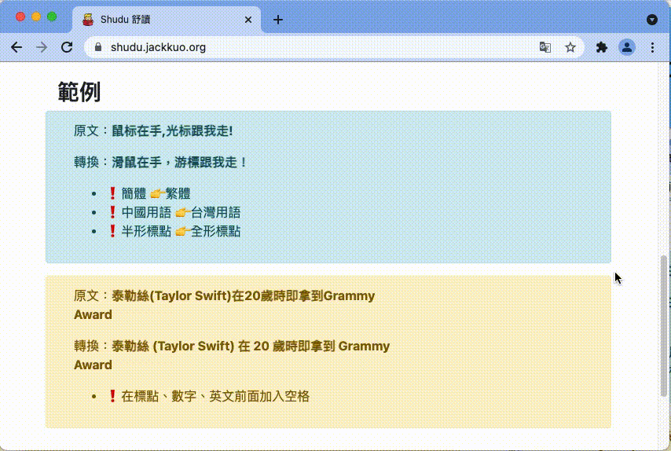

__MSG_release_notes__
v1.4
__MSG_current_version__
使用 WebAssembly 重構，此後不再需要回傳任何資料到伺服器轉換，請安心使用。
v1.3
更新了頁面解析演算法，解決了以往轉換完後部分按鈕無法點選、文字偏移問題，在轉換速度上也有大幅度的提升。

v1.2
- 提供自定義伺服器網址
- 使用 i18n 以更方便支援多國語言
v1.1
提供基本設定（繁簡偏好、標點符號偏好，自動轉換網址）
v1.0
Hello World